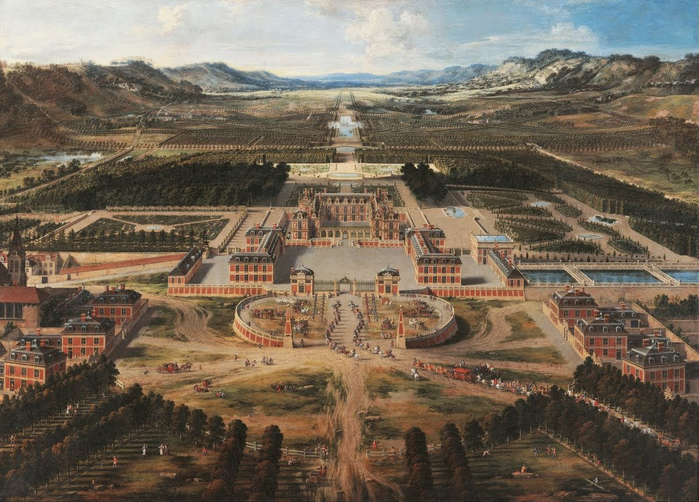
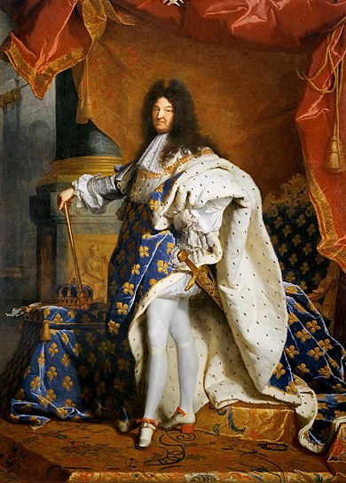

History of Versailles
Explore the fascinating history of the city of Versailles and its iconic palace, from its origins to its role in shaping French and world history.
The Origins of Versailles

Originally a small rural village in the 11th century, Versailles gained prominence when King Louis XIII built a hunting lodge in 1623. This marked the beginning of Versailles’ transformation into a political and cultural hub.
Louis XIV and the Palace

King Louis XIV, known as the Sun King, expanded the lodge into the grand Palace of Versailles starting in 1661. The palace became the symbol of absolute monarchy, hosting elaborate ceremonies and royal court life.
Role in French History

The Palace of Versailles was at the center of significant events, such as the French Revolution in 1789. The royal family was forced to leave the palace, marking the decline of absolute monarchy in France.
The Treaty of Versailles

In 1919, the Treaty of Versailles was signed in the Hall of Mirrors, officially ending World War I. This event further cemented the palace’s place in global history.